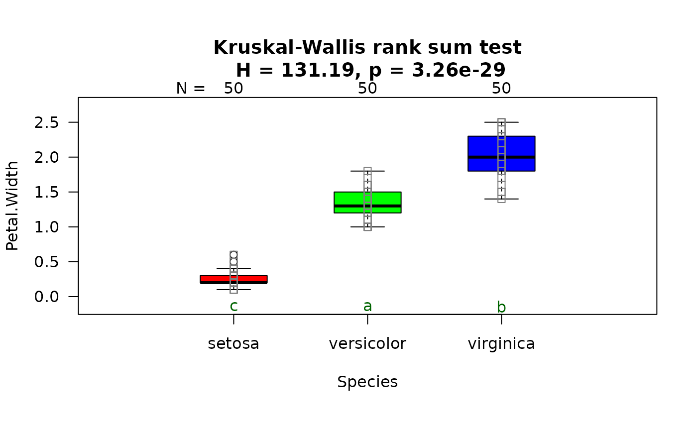
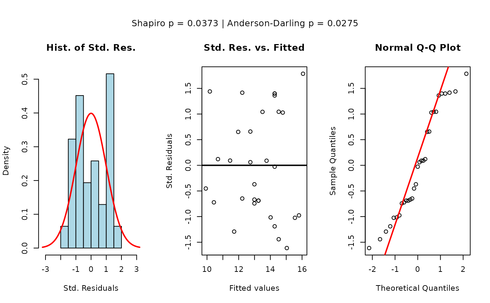
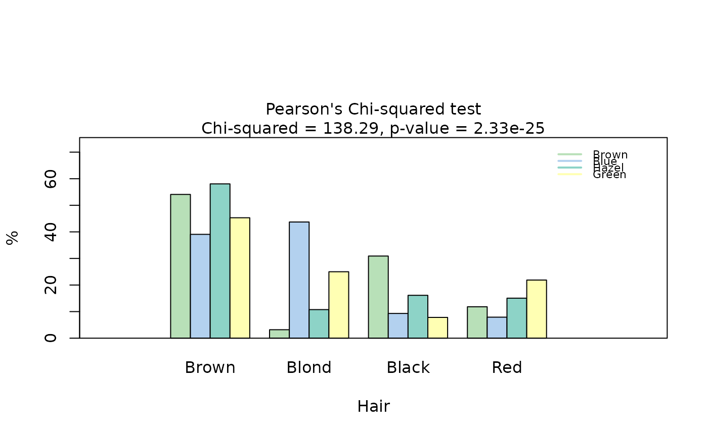
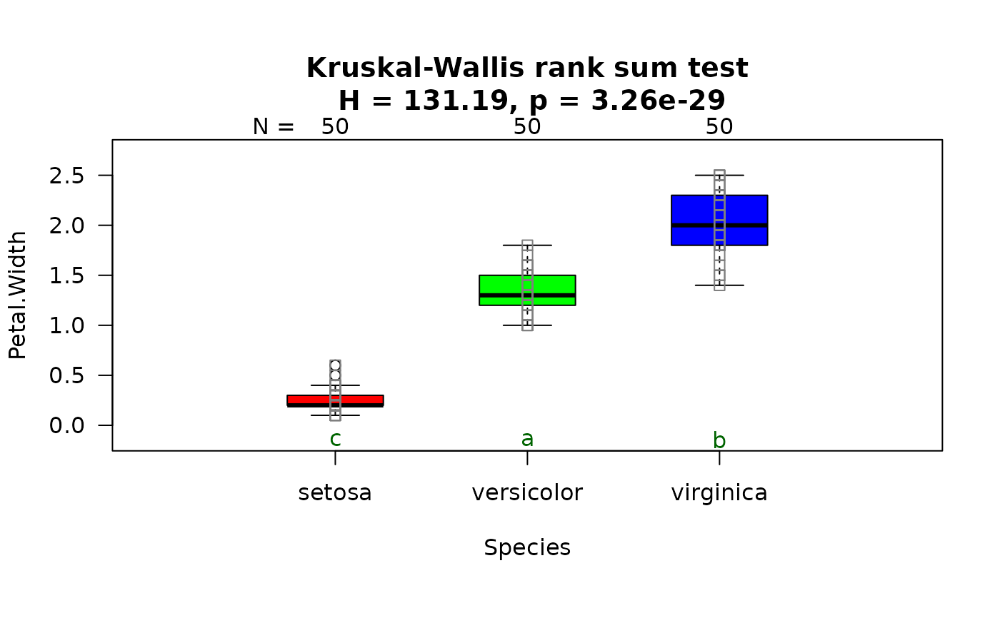
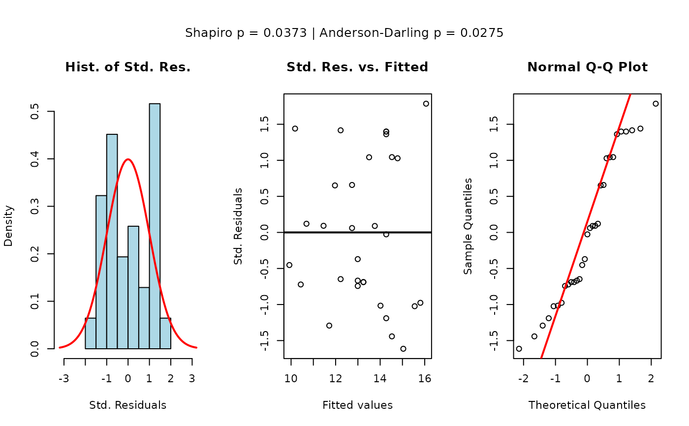
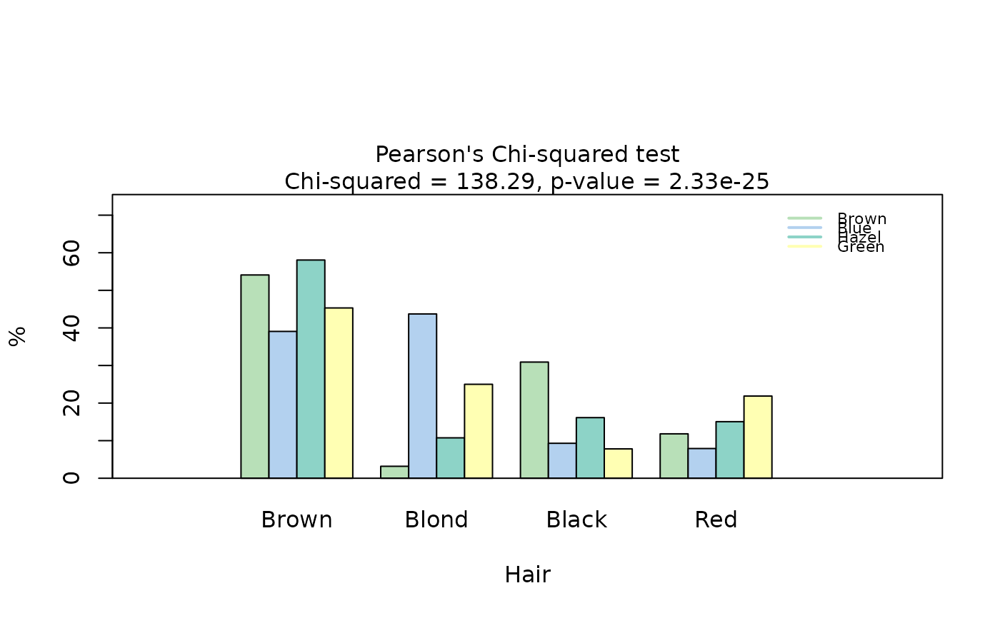

A wrapper around the core function visstat_core.
visstat_core defines the
decision logic for statistical hypothesis testing and visualisation between
two variables of class "numeric", "integer", or "factor".
visstat(
x,
y,
...,
conf.level = 0.95,
numbers = TRUE,
minpercent = 0.05,
graphicsoutput = NULL,
plotName = NULL,
plotDirectory = getwd()
)Arguments
- x
A vector of class
"numeric","integer", or"factor"(standardised usage), or adata.framecontaining the relevant columns (backward-compatible usage).- y
A second vector (standardised usage), or a character string specifying the name of a column in
x(backward-compatible usage).- ...
If
xis a data frame andyis a character string, an additional character string must follow, naming the second column.- conf.level
Confidence level for statistical inference; default is
0.95.- numbers
Logical. Whether to annotate plots with numeric values.
- minpercent
Minimum proportion (between 0 and 1) required to display a category in plots.
- graphicsoutput
Optional. Output format for plots (e.g.,
"pdf","png").- plotName
Optional. File name prefix for saving plot output. By default, it follows the pattern
"testname_namey_namex.", where"testname"specifies the selected test and"namey"and"namex"are character strings naming the selected data vectorsyandx, respectively. The suffix corresponding to the chosengraphicsoutputis then concatenated to form the complete figure file name.- plotDirectory
Directory in which to save plots; defaults to the current working directory.
Value
An object of class "visstat" containing the results of
the automatically selected statistical test. The specific contents depend on
which test was performed:
t-test: Elements named
"dependent variable (response)","independent variables (features)","t-test-statistics","Shapiro-Wilk-test_sample1", and"Shapiro-Wilk-test_sample2"Wilcoxon: Elements named
"dependent variable (response)","indepedent variables (features)","statsWilcoxon", and"statsBoxplot"ANOVA: Elements named
"summary statistics of ANOVA","post-hoc analysis of TuckeyHSD", and"conf.level"Kruskal-Wallis: Elements named
"Kruskal Wallis rank sum test"and"post-hoc by pairwise Wilcoxon rank sum test"Regression: Elements named
"independent variable x","dependent variable y","summary_regression","shapiro_test_residuals","anderson_darling_test_residuals", and"error_bands"Chi-squared/Fisher's test: Elements from
chisq.test()orfisher.test()combined with an element named"mosaic_stats"containing mosaic plot results
The returned object includes two attributes:
plot_paths: Character vector of file paths where plots were saved (ifgraphicsoutputwas specified)captured_plots: List of captured plot objects for programmatic access
In case of insufficient data, returns a list with an error element and
basic input summary information.
Details
This wrapper supports two input formats:
Standardised form:
visstat(x, y), where bothxandyare vectors of class"numeric","integer", or"factor".Backward-compatible form:
visstat(dataframe, "name_of_y", "name_of_x"), where both character strings refer to column names indataframe. This is equivalent to:visstat(dataframe[["name_of_x"]], dataframe[["name_of_y"]]).
The interpretation of x and y depends on the variable classes:
In the following, data of class numeric or
integer are both referred to by their common mode numeric
If one variable is numeric and the other a factor, the numeric vector must be passed as
yand the factor asx. This supports tests of central tendencies (e.g., t-test, ANOVA, Wilcoxon).If both variables are numeric, a linear model is fitted with
yas the response andxas the predictor.If both variables are factors, an association test (Chi-squared or Fisher’s exact) is used. The test result is invariant to variable order, but visualisations (e.g., axis layout, bar orientation) depend on the roles of
xandy.
This wrapper standardises the input and calls visstat_core,
which selects and executes the appropriate test with visual output and
assumption diagnostics.
Note
For best visualization, ensure the RStudio Plots pane is adequately sized. If you get "figure margins too large" errors, try:
Expanding the Plots pane in RStudio
Using
dev.new(width=10, height=6)for a larger plot window.Reducing the
cexparameter
See also
visstat_core defining the decision logic,
the package's vignette vignette("visStatistics") explaining the
decision logic accompanied by illustrative examples,
and the accompanying webpage
https://shhschilling.github.io/visStatistics/.
Examples
## Standardised usage (preferred):
mtcars$am=as.factor(mtcars$am)
visstat(mtcars$am, mtcars$mpg)

 ## Backward-compatible usage (same result):
visstat(mtcars, "mpg", "am")
## Backward-compatible usage (same result):
visstat(mtcars, "mpg", "am")
 ## Wilcoxon rank sum test
grades_gender <- data.frame(
Sex = as.factor(c(rep("Girl", 20), rep("Boy", 20))),
Grade = c(
19.3, 18.1, 15.2, 18.3, 7.9, 6.2, 19.4, 20.3, 9.3, 11.3,
18.2, 17.5, 10.2, 20.1, 13.3, 17.2, 15.1, 16.2, 17.3, 16.5,
5.1, 15.3, 17.1, 14.8, 15.4, 14.4, 7.5, 15.5, 6.0, 17.4,
7.3, 14.3, 13.5, 8.0, 19.5, 13.4, 17.9, 17.7, 16.4, 15.6
)
)
visstat(grades_gender$Sex, grades_gender$Grade)
## Wilcoxon rank sum test
grades_gender <- data.frame(
Sex = as.factor(c(rep("Girl", 20), rep("Boy", 20))),
Grade = c(
19.3, 18.1, 15.2, 18.3, 7.9, 6.2, 19.4, 20.3, 9.3, 11.3,
18.2, 17.5, 10.2, 20.1, 13.3, 17.2, 15.1, 16.2, 17.3, 16.5,
5.1, 15.3, 17.1, 14.8, 15.4, 14.4, 7.5, 15.5, 6.0, 17.4,
7.3, 14.3, 13.5, 8.0, 19.5, 13.4, 17.9, 17.7, 16.4, 15.6
)
)
visstat(grades_gender$Sex, grades_gender$Grade)

 ## Welch's one-way ANOVA
visstat(npk$block, npk$yield)
## Welch's one-way ANOVA
visstat(npk$block, npk$yield)

 ## Kruskal-Wallis
visstat(iris$Species, iris$Petal.Width)
## Kruskal-Wallis
visstat(iris$Species, iris$Petal.Width)
 
## Simple linear regression
visstat(trees$Height, trees$Girth, conf.level = 0.99)

## Chi-squared
HairEyeColorDataFrame <- counts_to_cases(as.data.frame(HairEyeColor))
visstat(HairEyeColorDataFrame$Eye, HairEyeColorDataFrame$Hair)


## Simple linear regression
visstat(trees$Height, trees$Girth, conf.level = 0.99)

## Chi-squared
HairEyeColorDataFrame <- counts_to_cases(as.data.frame(HairEyeColor))
visstat(HairEyeColorDataFrame$Eye, HairEyeColorDataFrame$Hair)

 ## Fisher's test
HairEyeColorMaleFisher <- HairEyeColor[, , 1]
blackBrownHazelGreen <- HairEyeColorMaleFisher[1:2, 3:4]
blackBrownHazelGreen <- counts_to_cases(as.data.frame(blackBrownHazelGreen))
visstat(blackBrownHazelGreen$Eye, blackBrownHazelGreen$Hair)
## Fisher's test
HairEyeColorMaleFisher <- HairEyeColor[, , 1]
blackBrownHazelGreen <- HairEyeColorMaleFisher[1:2, 3:4]
blackBrownHazelGreen <- counts_to_cases(as.data.frame(blackBrownHazelGreen))
visstat(blackBrownHazelGreen$Eye, blackBrownHazelGreen$Hair)
 ## Save PNG
visstat(blackBrownHazelGreen$Hair, blackBrownHazelGreen$Eye,
graphicsoutput = "png", plotDirectory = tempdir())
## Custom plot name
visstat(iris$Species, iris$Petal.Width,
graphicsoutput = "pdf", plotName = "kruskal_iris", plotDirectory = tempdir())
#> Warning: calling par(new=TRUE) with no plot
## Save PNG
visstat(blackBrownHazelGreen$Hair, blackBrownHazelGreen$Eye,
graphicsoutput = "png", plotDirectory = tempdir())
## Custom plot name
visstat(iris$Species, iris$Petal.Width,
graphicsoutput = "pdf", plotName = "kruskal_iris", plotDirectory = tempdir())
#> Warning: calling par(new=TRUE) with no plot